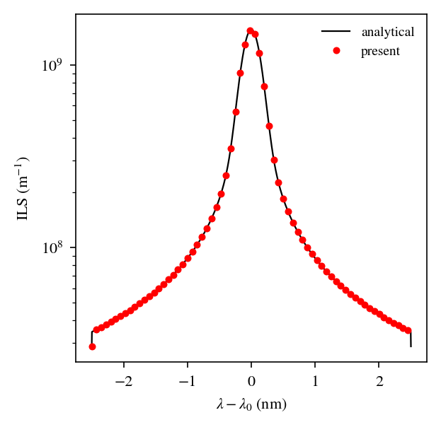
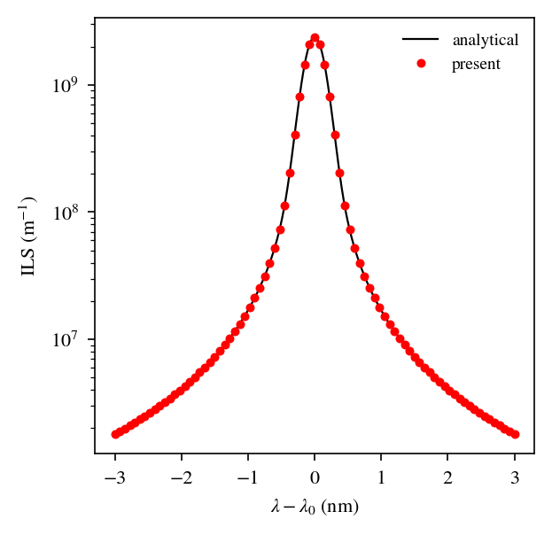
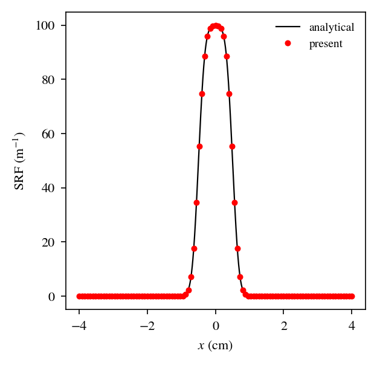
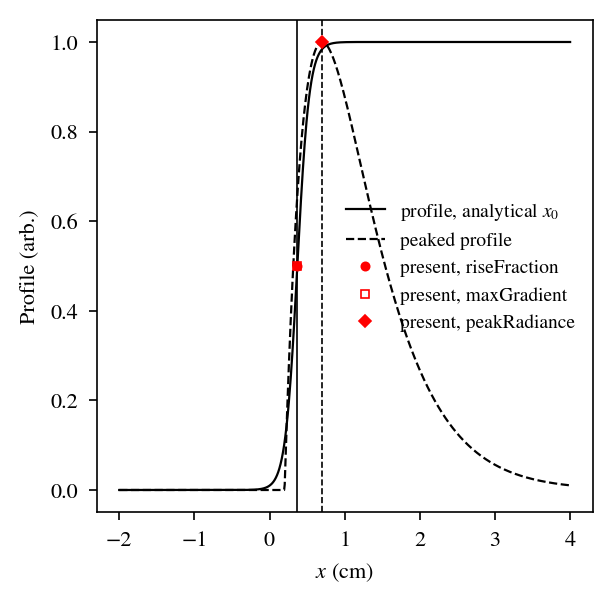
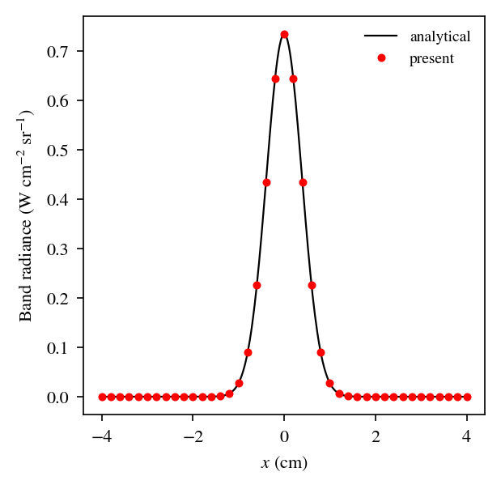

Instrument model verification
Directory: tutorials/instrumentTests/ (Allrun, Allclean,
run_tests.py, plot_style.py).
Purpose
This tutorial verifies the instrument (measurement) model of
Instrument model: reproducing a shock-tube measurement without the solver. run_tests.py writes input
signals, drives the classes of src/radiation/instrument through the test
application Test-radiationInstrument, and compares every output with an
analytical result or an independent Python transcription: 53 checks of the
kernels, the discrete convolution, the edge conservation, the band integral,
the shock-front criteria and the complete measurement of a field. It is the
gate to pass after any change of the instrument code, and an example of how
to test a new kernel.
Requirements: Test-radiationInstrument on the path (built from
applications/test/radiationInstrument by Allwmake), Python 3 with
numpy, scipy and matplotlib.
How the comparison is made
The library returns bin averages of the convolution (the bins are the
midpoints between grid points, half bins at the ends; see
Instrument model: reproducing a shock-tube measurement). Every analytical reference is therefore averaged
over the same bins with exact antiderivatives, not sampled at the points. A
reference written as a CDF \(C\) gives, for a delta source of unit
content at \(y_j\) and with the window renormalisation of
conserveAtEdges,
which the script compares with the C++ output. The figures show the present result as red markers and the analytical result as a black line.
The tests
run_tests.py writes the inputs to cases/, the test dictionary to
system/instrumentTests (one sub-dictionary per test, see
Instrument classes for the kind entries), runs
Test-radiationInstrument, and writes summary.csv and figures/.
Test |
What |
Reference |
|---|---|---|
T1 (2 cases) |
Gaussian signal (\(\sigma\) = 0.3 nm) through a Gaussian ILS (\(\sigma\) = 0.4 nm), uniform grid and stretched (sinh) non-uniform grid |
Gaussian with the summed variances |
T2a |
Top hat of the shock motion, \(U_s\) = 10 km/s, \(t_\mathrm{gate}\) = 1 µs (1 cm), on a Gaussian profile |
erf form (antiderivative of \(\Phi\)) |
T2b |
Composite (Gaussian optics \(\otimes\) top-hat motion) on a delta |
analytical Gaussian \(\otimes\) top hat |
T2c (2 cases) |
Composite of two top hats (1 cm and 0.4 cm) on a delta, default and
|
trapezoid |
T2d |
Top hat on a resolved step (tanh rise) |
numerically exact moving average, interior points |
T3 (7 cases) |
Delta line through every ILS: |
independent CDFs (scipy |
T4 (2 cases) |
Line 0.3 nm from the window edge, |
integral conserved; analytic window mass lost |
T6 |
Band integral of a Gaussian line plus a linear background on a non-uniform grid, four bands (line, all clipped, narrow, wing) |
integral of the linear interpolant; exact integral |
T7 (2 profiles) |
Shock front on a logistic rise and on a peaked profile, non-uniform grid |
known \(x_0\) of each profile |
T8 |
Full |
analytical measured field, band profiles and front |
The 53 checks are: the integral conservation of each T1-T4 convolution with
conserveAtEdges true (19, tolerance \(10^{-12}\)), the agreement
with the reference of each T1, T2 and T3 case (18), the edge loss of T4
false (1), two per T6 band (8), three front locations of T7 (3), and the
field, the two band profiles and the front of T8 (4).
How to run
cd tutorials/instrumentTests
./Allrun # python3 run_tests.py > log.run_tests; prints the pass/fail count
./Allclean # removes cases, output, figures, system, summary.csv, logs
Allrun ends with a line checks: N pass, M fail (summary.csv). The two
T8 field files (about 6 MB each) are deleted at the end of the script.
Output
summary.csv:test,quantity,value,tolerance,passper check;output/: the outputs ofTest-radiationInstrument(y,f,gper convolution with the integrals in the header, band integrals, front locations, T8 band profiles);figures/: one PNG and one PDF per figure;log.Test-radiationInstrument,log.run_tests.
Expected result
The 53 checks include four truncated or pure-component response cases.
The table below gives the original suite values from the
DSMC_Rovibronic repository (run/RAD/instrument_tests/summary.csv,
2026-11-14; that file also holds two checks of a kernel removed since, not
listed here):
Check |
Value |
Tolerance |
|---|---|---|
integral conservation, every case |
\(\le 2.8\times10^{-16}\) |
\(10^{-12}\) |
T1 uniform / non-uniform grid |
\(1.0\times10^{-13}\) / \(1.9\times10^{-6}\) |
\(10^{-9}\) / \(2\times10^{-4}\) |
T2a top hat on Gaussian |
\(6.4\times10^{-6}\) |
\(2\times10^{-5}\) |
T2b composite on delta |
\(6.0\times10^{-6}\) |
\(10^{-4}\) |
T2c two top hats, resolution 200 / 1000 |
\(5.0\times10^{-4}\) / \(1.3\times10^{-5}\) |
\(10^{-3}\) / \(2\times10^{-4}\) |
T3 analytic CDFs (Gaussian, pseudo-Voigt, Gauss + Lorentz, tabulated) |
\(\le 6.9\times10^{-14}\) |
\(10^{-7}\) |
T3 trapezoid |
\(3.2\times10^{-9}\) |
\(10^{-7}\) |
T3 exact Voigt / sqrt-Voigt (tables) |
\(1.0\times10^{-4}\) / \(5.7\times10^{-5}\) |
\(2\times10^{-4}\) |
T2d top hat on step (absolute) |
\(2.6\times10^{-5}\) |
\(10^{-4}\) |
T4 edge loss, |
\(1.2\times10^{-16}\) |
\(10^{-12}\) |
T6 band vs linear interpolant |
\(\le 1.7\times10^{-15}\) |
\(10^{-12}\) |
T6 band vs exact integral (narrow band) |
\(\le 7.7\times10^{-9}\) (\(2.3\times10^{-4}\)) |
\(2\times10^{-4}\) (\(10^{-3}\)) |
T7 front locations |
\(\le 3.7\times10^{-7}\) m |
\(2\times10^{-5}\) m |
T8 measured field / band profiles |
\(6.3\times10^{-12}\) / \(\le 1.9\times10^{-4}\) |
\(10^{-8}\) / \(2\times10^{-3}\) |
T8 |
\(2.2\times10^{-18}\) m |
\(10^{-6}\) m |
The tabulated kernels (exact Voigt, sqrt-Voigt, composite) are the only ones
with a discretisation error, \(O(h^2)\) of the table spacing, which is
why their tolerances are larger; it decreases as expected when
resolution is raised (T2c). The T8 band profiles are compared with the
continuous analytical band radiance, so their \(10^{-4}\) difference is
the grid error of the trapezoid band integral, not an error of the
convolution.
 |
 |
 |
 |
Top: a delta line through the sqrt-Voigt EAST ILS (\(w_G\) = 0.12 nm, \(w_L\) = 0.03 nm, cut-off 2.5 nm) and through the exact Voigt (\(f_G\) = 0.30 nm, \(f_L\) = 0.10 nm), log scale. Bottom left: the composite SRF (Gaussian optics \(\otimes\) 1 cm gate top hat) on a delta. Bottom right: the three front criteria on a rising and a peaked profile.


T8: measured band radiance (499-501 nm) of a separable Gaussian field after a Gaussian ILS and a Gaussian SRF, present (red) and analytical (black).
References
Brandis, A. M. and Cruden, B. A., “Benchmark Shock Tube Experiments of Radiative Heating Relevant to Earth Re-entry,” 55th AIAA Aerospace Sciences Meeting, AIAA Paper 2017-1145, 2017. doi:10.2514/6.2017-1145
Thompson, P., Cox, D. E. and Hastings, J. B., Journal of Applied Crystallography, 20, 79, 1987 (reference as given in
instrumentVoigt.H).